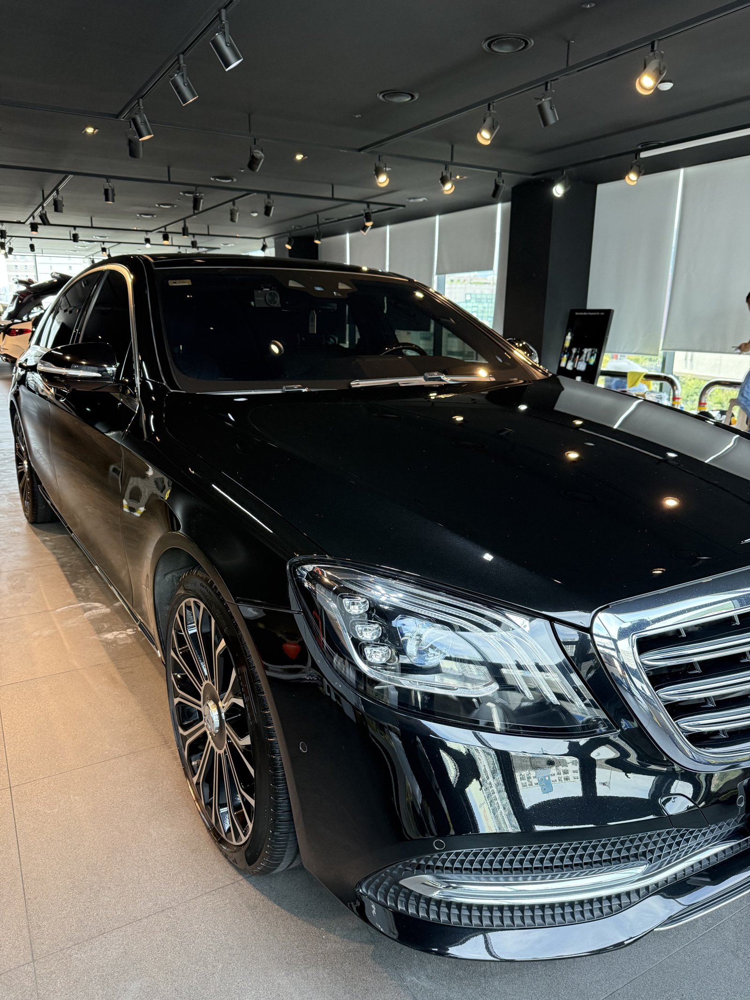
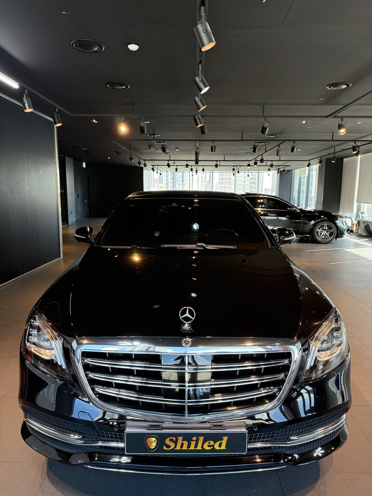
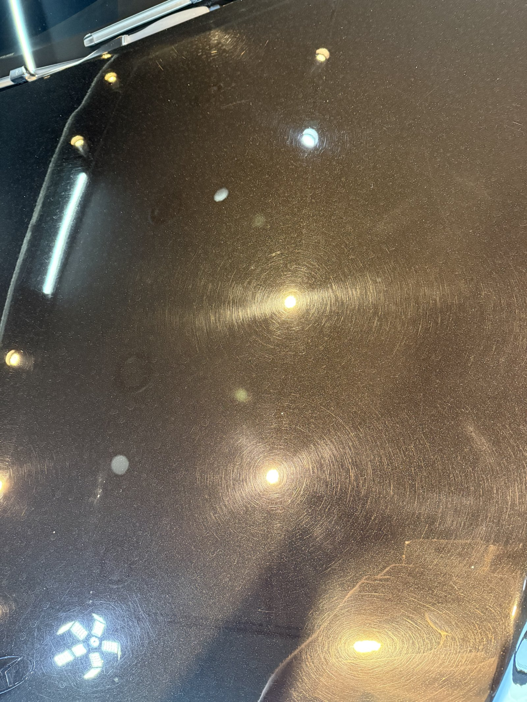
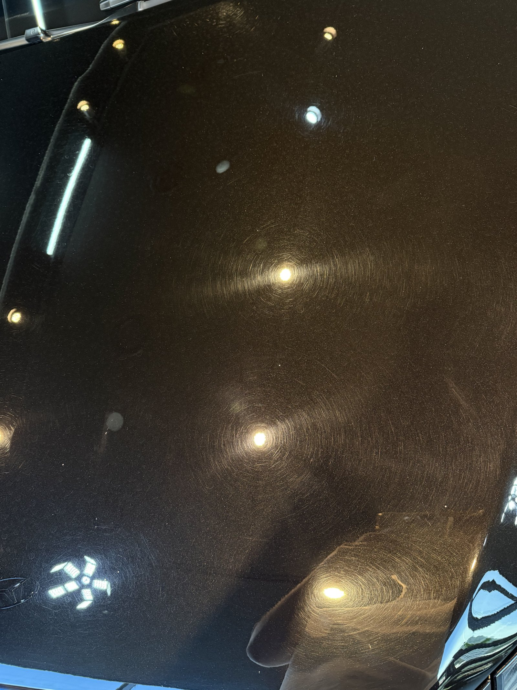
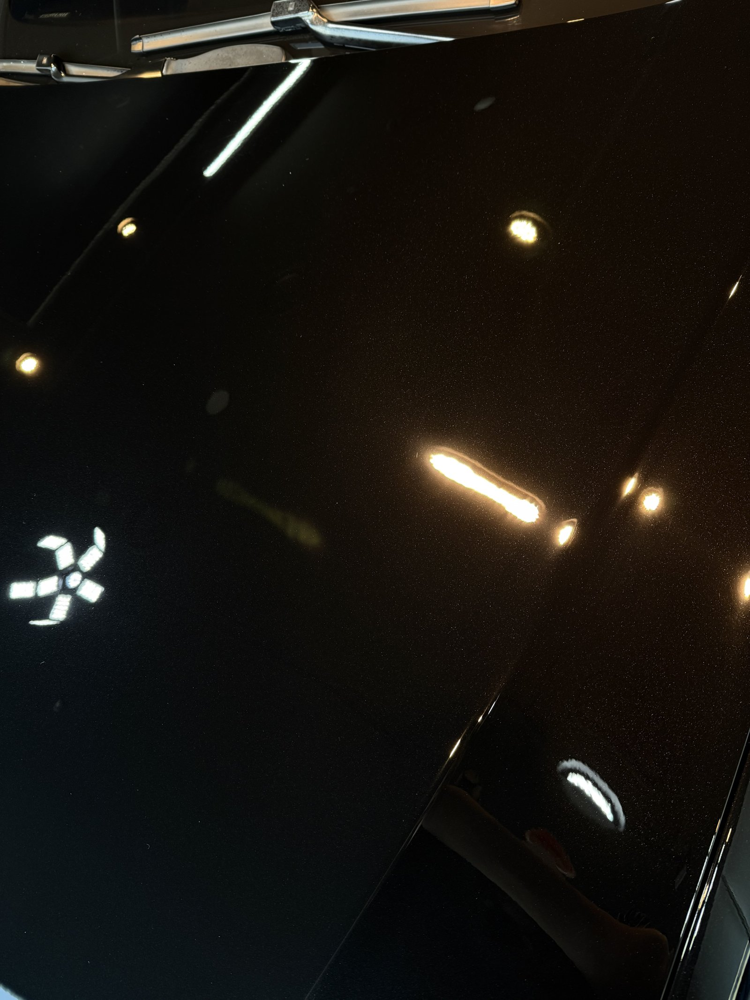
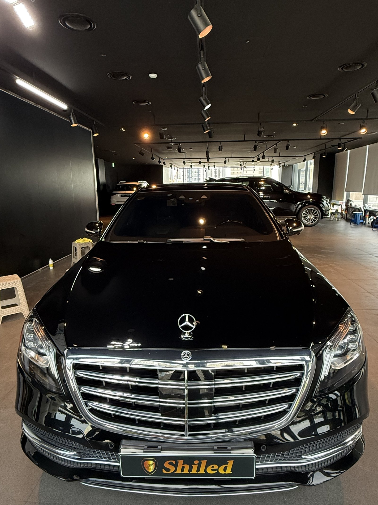
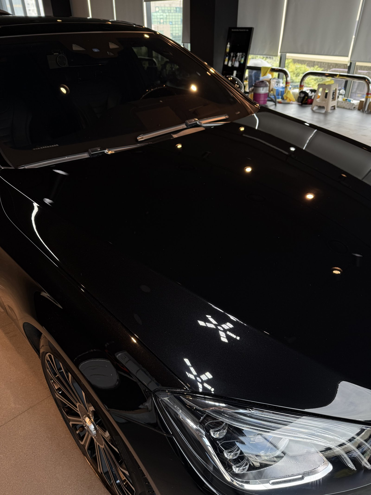
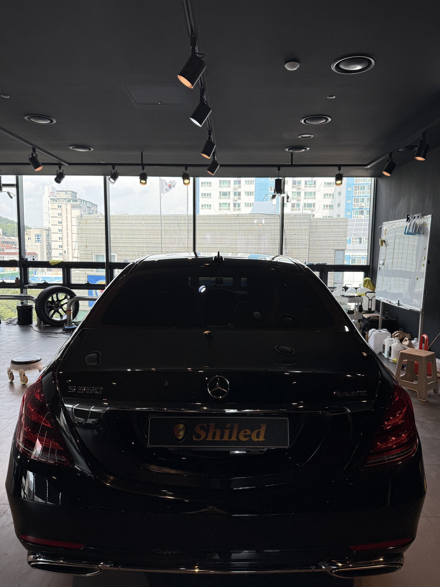
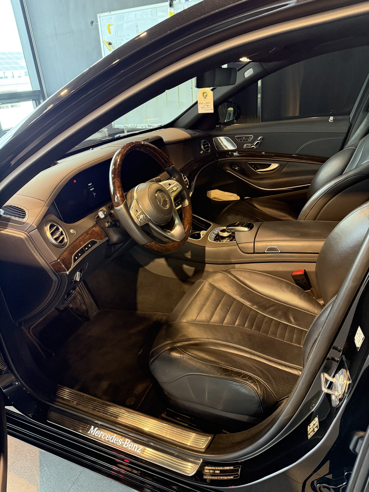
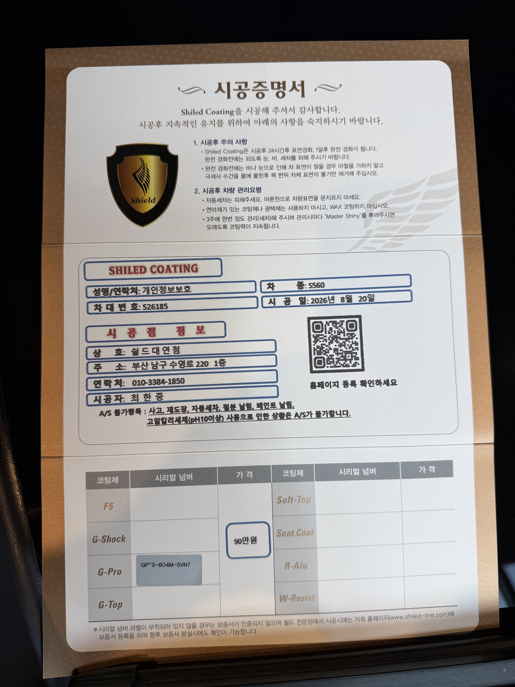

벤츠 S560 검정입니다.
매장 조명 아래 본넷을 세워두니 동심원 모양 자국이 자글자글하게 드러났습니다.

검정차는 왜 스월이 유독 잘 보이나
색 대비가 가장 큰 색이라서입니다.
세차 중 마른 걸레로 문지르거나, 세차장 브러시가 반복적으로 같은 방향으로 스치면 도장면에 아주 가는 원형 자국이 쌓입니다. 밝은 색은 이 자국이 잘 안 보이지만, 검정은 조명 하나만 있어도 그 원이 그대로 드러납니다. 타는 동안 모르고 지나가다가, 매장 조명 아래서야 발견하는 경우가 대부분입니다.


작업 전 본넷. 조명 주변으로 동심원 자국이 겹겹이 보입니다
조명 하나에 원이 여러 겹으로 겹쳐 보일수록 스월이 오래, 여러 번 쌓였다는 뜻입니다.
이 차도 본넷 전체에 걸쳐 자국이 고르게 퍼져 있었습니다. 특정 부위만이 아니라 세차 습관 자체에서 누적된 흔적입니다.

같은 본넷의 다른 구간. 자국의 밀도가 비슷하게 퍼져 있습니다
부산 광택, 스월은 어떤 순서로 잡나
바로 연마부터 들어가지 않습니다.
① 디테일링 세차와 철분 제거로 표면 오염을 먼저 걷어내고,
② 조명으로 스월의 깊이와 범위를 확인한 뒤,
③ 컴파운드와 폴리싱 패드를 단계별로 바꿔가며 자국을 지웁니다.
세게, 한 번에 밀지 않습니다. 도장을 깎는 양을 최소화하면서 자국만 골라 지워야 클리어층이 불필요하게 얇아지지 않습니다.
기술자의 팁
스월은 100% 완전히 사라진다고 장담하지 않습니다. 얕은 자국은 대부분 지워지지만, 도장을 깎아내는 양에는 한계가 있어 아주 깊게 박힌 자국은 옅어지는 선에서 마무리될 수 있습니다. 이 차는 조명 아래서 원이 거의 잡히지 않는 수준까지 지웠습니다.

같은 본넷, 작업 후. 조명 반사가 원 없이 점과 선으로 또렷하게 맺힙니다
작업 전 사진과 비교하면 차이가 뚜렷합니다.
조명 주변을 겹겹이 둘러싸던 원이 사라지고, 빛이 점이나 직선으로 깔끔하게 맺힙니다. 도장면이 빛을 흩뜨리지 않고 그대로 되쏘고 있다는 뜻입니다.


마감은 G-TOP 코팅으로
스월을 지운 도장면은 보호막이 없는 맨살 상태입니다.
여기에 G-TOP으로 발수·방오막을 올려 마무리했습니다. 광택으로 흠집을 지운 직후가 오염에는 오히려 더 취약한 시점이라, 코팅으로 바로 덮어야 애써 만든 표면을 오래 지킬 수 있습니다. 코팅제는 대표가 화학공학 전공으로 직접 개발·제조한 제품입니다.


내부도 함께 정리합니다
외부 도장을 잡는 동안 실내도 같이 관리합니다.
진공과 정리로 인도 전 컨디션까지 맞춰드립니다.

시공증명서를 함께 드립니다
모든 시공 차량에 시공증명서를 드립니다.
차종·시공일·코팅제 시리얼 번호가 적혀 있고, 홈페이지에 등록해 보증을 받으실 수 있습니다. 이 차는 G-TOP 코팅으로 기록돼 있습니다.

차종·시공일·코팅제 시리얼이 기재된 시공증명서
자주 묻는 질문
Q. 검정차는 왜 스월이 더 잘 보이나요?
A. 색 대비가 가장 큰 색이기 때문입니다. 세차 중 마른 걸레질이나 세차장 브러시가 반복적으로 같은 방향으로 스치며 쌓인 원형 자국이, 밝은 색에서는 잘 안 보이지만 검정에서는 조명 하나만으로도 그대로 드러납니다.
Q. 광택으로 스월이 완전히 없어지나요?
A. 얕은 자국은 대부분 지워지지만, 도장을 깎는 양에는 한계가 있어 아주 깊게 박힌 자국은 옅어지는 선에서 마무리될 수 있습니다. 이번 S560은 조명 아래서 원이 거의 잡히지 않는 수준까지 지웠습니다.
Q. 광택 후에는 왜 코팅을 올리나요?
A. 스월을 지운 직후 도장면은 보호막이 없는 맨살 상태라 오염에 오히려 더 취약합니다. 이 차는 G-TOP으로 발수·방오막을 바로 올려, 애써 만든 표면을 오래 지키도록 마감했습니다.
Q. 쉴드광택 위치와 예약은 어떻게 하나요?
A. 부산 남구 유엔로220 1F 쉴드광택입니다. 예약·상담은 010-3384-1850, 대표 최한중이 직접 상담하고 책임 시공합니다.
검정차 스월은 세차만으로 안 지워집니다. 광택으로 걷어내고 코팅으로 지키십시오.
제품을 직접 만드는 사람이 직접 시공합니다.
부산에서 광택·스월 제거를 고민 중이시면 편하게 연락 주십시오.
어떤 차를 타냐보다 어떻게 타냐가 중요합니다~!
시공 중에는 전화를 받지 못할 때가 많습니다.
카카오톡으로 차종과 원하시는 시공을 남겨주시면 확인 후 답변드립니다.
쉴드광택 · 부산 남구 유엔로220 1F · 대표 최한중